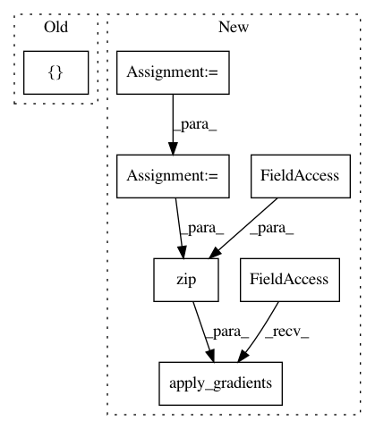

641a28fbf0daff0ad1ad0f43d2c4b545cb6f9656,examples/reinforcement_learning/tutorial_cartpole_ac.py,Actor,learn,#Actor#Any#Any#Any#,106
Before Change
// self.train_op = tf.train.AdamOptimizer(lr).minimize(-self.exp_v) // minimize(-exp_v) = maximize(exp_v)
def learn(self, s, a, td):
_, exp_v = self.sess.run([self.train_op, self.exp_v], {self.s: [s], self.a: [a], self.td_error: td[0]})
return exp_v
def choose_action(self, s):
After Change
def learn(self, s, a, td):
// _, exp_v = self.sess.run([self.train_op, self.exp_v], {self.s: [s], self.a: [a], self.td_error: td[0]})
with tf.GradientTape() as tape:
_logits = self.model([s]).outputs
// _probs = tf.nn.softmax(_logits)
_exp_v = tl.rein.cross_entropy_reward_loss(logits=_logits, actions=[a], rewards=td[0])
grad = tape.gradient(_exp_v, self.model.weights)
self.optimizer.apply_gradients(zip(grad, self.model.weights))
return _exp_v
def choose_action(self, s):
// probs = self.sess.run(self.acts_prob, {self.s: [s]}) // get probabilities of all actions
In pattern: SUPERPATTERN
Frequency: 3
Non-data size: 7
Instances
Project Name: tensorlayer/tensorlayer
Commit Name: 641a28fbf0daff0ad1ad0f43d2c4b545cb6f9656
Time: 2019-02-16
Author: dhsig552@163.com
File Name: examples/reinforcement_learning/tutorial_cartpole_ac.py
Class Name: Actor
Method Name: learn
Project Name: tensorlayer/tensorlayer
Commit Name: 641a28fbf0daff0ad1ad0f43d2c4b545cb6f9656
Time: 2019-02-16
Author: dhsig552@163.com
File Name: examples/reinforcement_learning/tutorial_cartpole_ac.py
Class Name: Critic
Method Name: learn
Project Name: arnomoonens/yarll
Commit Name: 41024c61c0737b1beaea8fff8e00a947d6b6ee9b
Time: 2017-02-09
Author: x-006@hotmail.com
File Name: knowledge_transfer.py
Class Name: KnowledgeTransferLearner
Method Name: build_networks